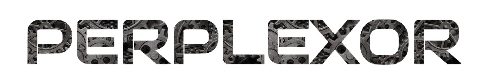

-

'Perplexor' was the premier event of Thought Processors. It was an online cryptic hunt that aimed to enhance the problem-solving skills of students. Participants were challenged to solve various puzzles and navigate through a series of three webpages - interlinked by a common theme - to get to the final solution.
-

'Perspectus,' the second iteration in our series of cryptic hunts, was launched in April 2018. The participants were given three days to put their skills to the test and crack 15 tantalizing puzzles - ranging from simple ciphers to tedious base conversions.
-
'Baffl.' - India's first quest-based cryptic hunt, was launched in June 2018. Participants journeyed across 4 thrilling quests on cryptography, seafaring, warfare and technology. Moreover, the money collected was donated to Goonj, a non-profit organization working to solve various societal issues.
-

'Odyssey' is the latest addition to our highly anticipated line of cryptic hunts. It is a quest-based hunt that requires players to take on widely different roles: from promising virologists to members of the Freemasons. Are you up for the challenge? Register now.